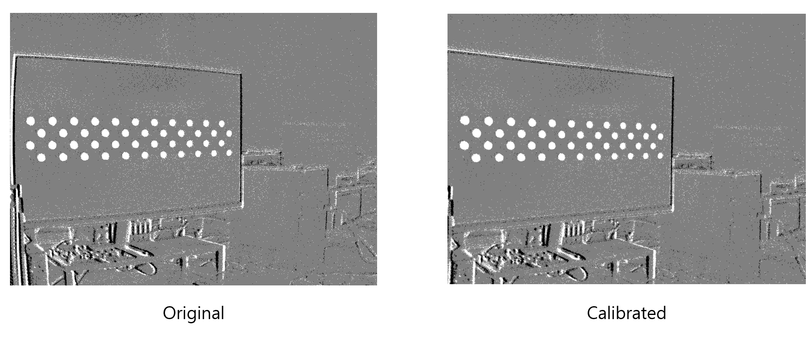
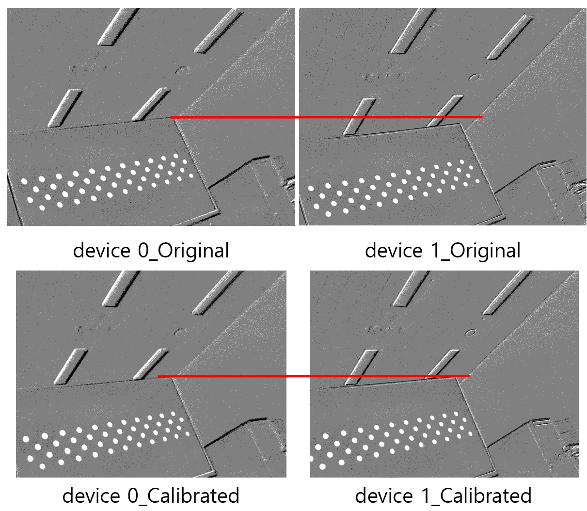

1. 카메라 캘리브레이션이란?
카메라 캘리브레이션은 카메라가 보는 영상 좌표를 실제 장면의 기하 구조와 연결하기 위해 필요한 파라미터를 구하는 작업입니다. 이 글에서는 왜 캘리브레이션이 필요한지, 어떤 값들이 계산되는지, 그리고 모노·스테레오 NRV DVS에서 그 결과를 어떻게 사용하는지 차근차근 설명합니다.
카메라는 3차원 장면에서 들어온 빛을 2차원 영상 좌표로 변환합니다. 하지만 실제 변환은 이상적이지 않습니다. 렌즈는 빛을 굴절시키고, 센서는 고유한 크기와 픽셀 배열을 가지며, 광학 중심이 영상의 정확한 중앙과 일치하지 않을 수도 있습니다. 캘리브레이션은 이러한 카메라별 특성을 계산하여 영상 좌표를 더 정확하게 해석할 수 있게 합니다.
따라서 캘리브레이션은 단순히 영상을 보기 좋게 만드는 과정이 아니라, 정확한 측정을 위한 기초 과정입니다. 카메라 모델을 알면 예측 가능한 기하학적 오차를 보정하고 하나 이상의 카메라에서 얻은 관측값을 일관된 좌표계에서 사용할 수 있습니다.
1.1 카메라 캘리브레이션의 기본 개념
모든 카메라는 서로 다른 렌즈와 센서 특성을 가집니다. 같은 모델의 카메라라도 제조 공차, 렌즈 장착 상태, 센서 정렬 상태 때문에 작은 차이가 발생할 수 있습니다. 따라서 카메라가 촬영한 좌표는 실제 장면을 완벽하게 동일한 비율로 표현하지 않습니다.
카메라 캘리브레이션은 각 카메라가 영상을 형성하는 방식을 설명하는 파라미터를 계산합니다. 일반적으로 기하 구조를 알고 있는 패턴을 여러 위치와 각도에서 관측하고, 패턴의 실제 구조와 영상에서 측정된 좌표를 비교합니다. 계산된 파라미터는 이상적인 영상 좌표와 실제 카메라 좌표 사이의 변환에 사용됩니다.
1.2 카메라 캘리브레이션이 필요한 이유
렌즈 왜곡은 캘리브레이션이 필요한 가장 눈에 띄는 이유입니다. 실제 장면의 직선이 영상 가장자리에서 휘어 보일 수 있으며, 같은 물체도 영상 안의 위치에 따라 조금씩 다른 형태와 위치로 관측될 수 있습니다. 이는 무작위 노이즈가 아니라 반복적으로 발생하는 좌표 오차입니다.
이러한 위치별 왜곡은 물체의 겉보기 형상도 변화시킵니다. 동일한 물체라도 영상 중앙에서는 원래 형태와 가깝게 보이지만, 가장자리에서는 늘어나거나 눌리거나 휘어진 형태로 보일 수 있습니다. 따라서 물체 탐지기는 영상 위치에 따라 같은 물체에 서로 다르게 반응할 수 있으며, 탐지의 일관성과 정확도가 저하될 수 있습니다.
이 오차를 보정하지 않으면 물체 중심 위치, 위치 추정, 스테레오 매칭과 깊이 계산에도 오차가 전달됩니다. 따라서 정확한 물체 검출, 치수 측정, 위치 추정 또는 깊이 계산이 필요한 시스템에서는 캘리브레이션이 필수입니다.

좌우 영상의 대응점은 같은 에피폴라 선 위에 있어야 합니다
두 카메라를 가로로 나란히 설치하더라도 영상이 자동으로 완벽하게 정렬되지는 않습니다. 두 카메라의 내부 특성 차이와 설치 높이, pitch 또는 roll의 작은 오차 때문에 같은 장면의 점이 왼쪽과 오른쪽 영상에서 서로 다른 세로 위치, 즉 다른 y 좌표에 나타날 수 있습니다.
스테레오 캘리브레이션은 두 카메라 사이의 위치와 방향 관계를 계산합니다. 이후 에피폴라 정렬을 적용하면 같은 물체의 대응점이 좌우 영상의 같은 수평 에피폴라 선에 놓이도록 맞출 수 있습니다. 그러면 스테레오 매칭을 주로 가로 방향에서 수행할 수 있어 시차와 깊이 계산이 더 정확해집니다.

1.3 모노와 스테레오 캘리브레이션에서 추정되는 파라미터
캘리브레이션은 보정된 영상을 바로 만드는 과정만을 의미하지 않습니다. 먼저 카메라 시스템을 설명하는 수치 파라미터를 추정하고, 그 값을 저장한 뒤 실제 보정 과정에 사용합니다. 필요한 결과값은 카메라가 한 대인지, 스테레오로 두 대인지에 따라 달라집니다.
한 카메라가 빛을 영상 또는 이벤트 좌표로 변환하는 방식을 추정합니다.
- 카메라 행렬
K -
초점 거리
fx, fy와 주점cx, cy입니다. - 왜곡 벡터
D -
방사 왜곡 계수
k1, k2, k3…와 접선 왜곡 계수p1, p2입니다.
사용 목적 한 영상의 왜곡을 제거하거나 개별 픽셀·이벤트 좌표를 보정합니다.
왼쪽과 오른쪽 카메라 각각의 모노 캘리브레이션 결과를 모두 포함합니다.
- 좌우 카메라 모델
-
KL, DL및KR, DR입니다. - 상대 자세
R, T - 한 카메라 좌표계를 기준으로 다른 카메라의 회전과 이동을 나타냅니다.
- 베이스라인
‖T‖ - 두 카메라 중심 사이의 실제 거리입니다. 캘리브레이션 패턴 치수와 동일한 단위로 계산됩니다.
- 스테레오 기하 정보
-
Essential matrix
E, fundamental matrixF및 정렬 변환입니다.
사용 목적 에피폴라 정렬, 스테레오 매칭, 시차 및 깊이 계산에 사용합니다.
왜곡 계수의 정확한 개수는 사용하는 카메라 모델에 따라 달라집니다. 스테레오 캘리브레이션은 각 카메라의 개별 캘리브레이션을 대체하는 것이 아니라, 그 결과에 두 카메라 사이의 관계를 추가하는 과정입니다.
1.4 캘리브레이션 파라미터 적용: 왜곡 보정과 정렬
캘리브레이션과 정렬(rectification)은 순서상 이어지는 작업이지만 역할은 다릅니다. 먼저 캘리브레이션은 체커보드처럼 기준이 되는 데이터를 사용해 카메라 파라미터를 계산합니다. 이 단계에서 바로 보정된 영상이 만들어지는 것은 아니며, 이후 실제 입력 데이터를 고칠 때 사용할 기준값을 얻는 과정입니다.
캘리브레이션은 값을 구하는 단계이고, 정렬은 그 값을 적용하는 단계입니다.
- 캘리브레이션
- 카메라 행렬, 왜곡 계수, 그리고 스테레오 시스템에서는 두 카메라 사이의 상대 자세를 추정합니다. 보통 오프라인에서 한 번 수행하고, 렌즈, 초점, 센서, 카메라 장착 상태가 바뀌었을 때 다시 수행합니다. 직접적인 결과물은 보정 영상이 아니라 파라미터입니다.
- 왜곡 보정 / 정렬
- 계산된 파라미터를 실제 영상, 측정 좌표 또는 이벤트 좌표에 적용하는 단계입니다. 모노 카메라에서는 주로 렌즈 때문에 휘어진 좌표를 바로잡고, 스테레오 카메라에서는 좌우 영상의 대응점이 같은 수평 에피폴라 선에 오도록 두 영상을 맞춥니다.
온라인 인식 시스템에서는 캘리브레이션 자체를 매 프레임마다 실행할 필요는 없습니다. 반복적으로 들어오는 입력 데이터에 계속 적용되는 것은 왜곡 보정 또는 정렬 맵이며, 이 적용 단계가 실시간 처리가 필요한 부분입니다.
왜곡 보정 또는 정렬은 이렇게 얻은 파라미터를 실제 데이터에 적용하는 단계입니다. 모노 영상에서는 휘어 보이는 직선이나 가장자리 좌표를 원래의 기하 구조에 더 가깝게 다시 배치합니다. 스테레오 영상에서는 왼쪽 영상과 오른쪽 영상의 같은 물체가 같은 높이의 선 위에 놓이도록 맞춰, 이후 스테레오 매칭과 깊이 계산이 쉬워지도록 만듭니다.
이 과정을 거치면 물체 검출, 위치 추정, 스테레오 매칭 같은 후속 알고리즘이 더 안정적인 좌표를 사용할 수 있습니다. 다만 보정은 새 정보를 만들어내는 작업은 아닙니다. 출력 영역을 어떻게 설정하느냐에 따라 영상 가장자리가 조금 잘리거나, 반대로 원본 픽셀이 없는 빈 영역이 생길 수 있습니다.
1.5 모노·스테레오 NRV DVS 캘리브레이션
NRV DVS는 모노 또는 스테레오 구성으로 사용됩니다. 여기서 NRV DVS는 센싱 장치를 가리키고, 모노와 스테레오는 카메라 구성을 의미합니다. 따라서 NRV DVS 캘리브레이션이 모노·스테레오와 별개의 세 번째 방식으로 존재하는 것이 아닙니다. NRV DVS 한 대를 사용하면 모노 캘리브레이션을 수행하고, NRV DVS 두 대를 함께 사용하면 스테레오 캘리브레이션을 수행합니다.
모노 NRV DVS 시스템에서는 하나의 렌즈와 센서에서 발생한 이벤트 좌표를 보정하기 위한 카메라 모델을 추정합니다. 스테레오 NRV DVS 시스템에서는 왼쪽과 오른쪽 NRV DVS를 각각 캘리브레이션한 뒤, 두 카메라 사이의 상대 자세와 베이스라인을 추가로 추정합니다. 이 스테레오 파라미터는 좌우 카메라에서 관측된 같은 구조가 같은 수평 에피폴라 선에 놓이도록 정렬하는 데 사용되며, 이후 스테레오 매칭과 깊이 계산의 기준이 됩니다.
같은 모노·스테레오 구분은 CIS 카메라에도 적용됩니다. 다음 섹션에서는 그중 NRV DVS에서 캘리브레이션 데이터를 어떻게 만들고, 모노·스테레오 캘리브레이션을 어떻게 수행하는지에 초점을 맞춥니다.
검색어와 일치하는 하위 섹션이 없습니다.
이 글은 NRV의 지원을 받아 작성했습니다. 공식 NRV docs에는 영문 버전이 제공됩니다.